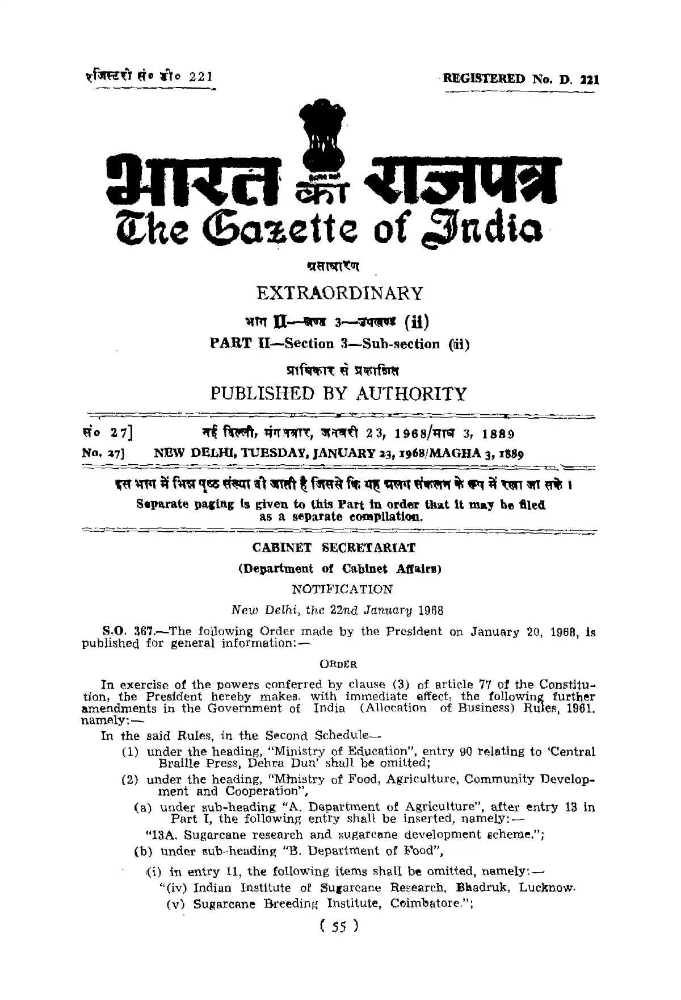
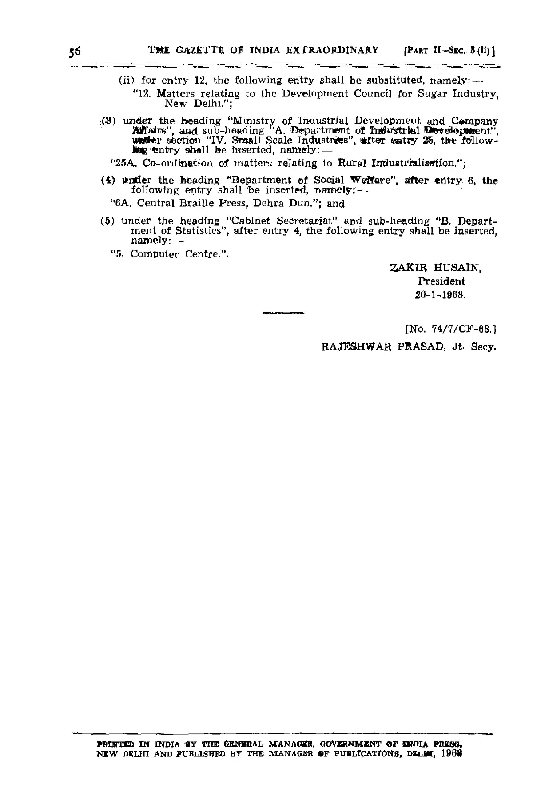

Amendment #64 (S.O. 367, 1968)
7 changes: 0 to the First Schedule, 7 to the Second Schedule. 6 applied1 not applied
The order, page by page
Page 1 of 2

123Schedule 2 › Ministry of Education › entry 90
applied at schedule 2 › ministry MINISTRY OF EDUCATION › ministry MINISTRY OF EDUCATION › entry 90 in the Rules after #64
after Schedule 2 › Mmistry of Food, Agriculture, Community Develop- ment and Cooperation › Department of Agriculture › Part I › entry 13
- 13A. Sugarcane research and sugarcane development scheme.
applied at schedule 2 › ministry Ministry of Food, Agriculture, Community Development and Cooperation › department A › part I ›… in the Rules after #64
states inferred loose
Schedule 2 › Mmistry of Food, Agriculture, Community Develop- ment and Cooperation › Department of Food › entry 11 › item iv; Schedule 2 › Mmistry of Food, Agriculture, Community Develop- ment and Cooperation › Department of Food › entry 11 › item v
- iv. Indian Institute of Sugarcane Research, Bhadruk, Lucknow.
- v. Sugarcane Breeding Institute, Coimbatore.
not applied (the change could not be placed in the Rules as read; see How this document was read)
states inferred loose
Page 2 of 2

4567Schedule 2 › Mmistry of Food, Agriculture, Community Develop- ment and Cooperation › Department of Food › entry 12
- 12. Matters relating to the Development Council for Sugar Industry New Delhi.
applied at schedule 2 › ministry Ministry of Food, Agriculture, Community Development and Cooperation › department B ›… in the Rules after #64
states inferred loose
after Schedule 2 › Ministry of Industrial Development and Company Affairs › Department of Industrial Development › IV. Small Scale Industries › entry 25
- 25A. Co-ordination of matters relating to Rural Industrialisation.
applied at schedule 2 › ministry MINISTRY OF INDUSTRIAL DEVELOPMENT AND COMPANY AFFAIRS › department A › group_heading IV › entry… in the Rules after #64
after Schedule 2 › Department of Social Welfare › entry 6
- 6A. Central Braille Press, Dehra Dun.
applied at schedule 2 › department Department of Social Welfare › entry 6A in the Rules after #64
after Schedule 2 › Cabinet Secretariat › Depart- ment of Statistics › entry 4
- 5. Computer Centre.
applied at schedule 2 › ministry CABINET SECRETARIAT › department B › entry 5 in the Rules after #64
How this document was read
Changes placed by an inference rule
| Change | Rule | Status | What |
|---|---|---|---|
| 2 | loose | accepted | change 2: ministry Mmistry of Food, Agriculture, Community Develop- ment and Cooperation taken for ministry Ministry of Food, Agriculture, Community Development and Cooperation, named loosely |
| 3 | loose | accepted | change 3: ministry Mmistry of Food, Agriculture, Community Develop- ment and Cooperation taken for ministry Ministry of Food, Agriculture, Community Development and Cooperation, named loosely |
| 3 | loose | accepted | change 3: ministry Mmistry of Food, Agriculture, Community Develop- ment and Cooperation taken for ministry Ministry of Food, Agriculture, Community Development and Cooperation, named loosely |
| 4 | loose | accepted | change 4: ministry Mmistry of Food, Agriculture, Community Develop- ment and Cooperation taken for ministry Ministry of Food, Agriculture, Community Development and Cooperation, named loosely |
Known issues
| Change | Issue | Known as |
|---|---|---|
| 3 | change 3: the part's text is not what the amendment quotes | Words that differ |
From the Government of India (Allocation of Business) Rules, 1961 and their amendments, as published by the Cabinet Secretariat (cabsec.gov.in), read by orgpedia. The readings of the older scanned gazettes have known gaps.